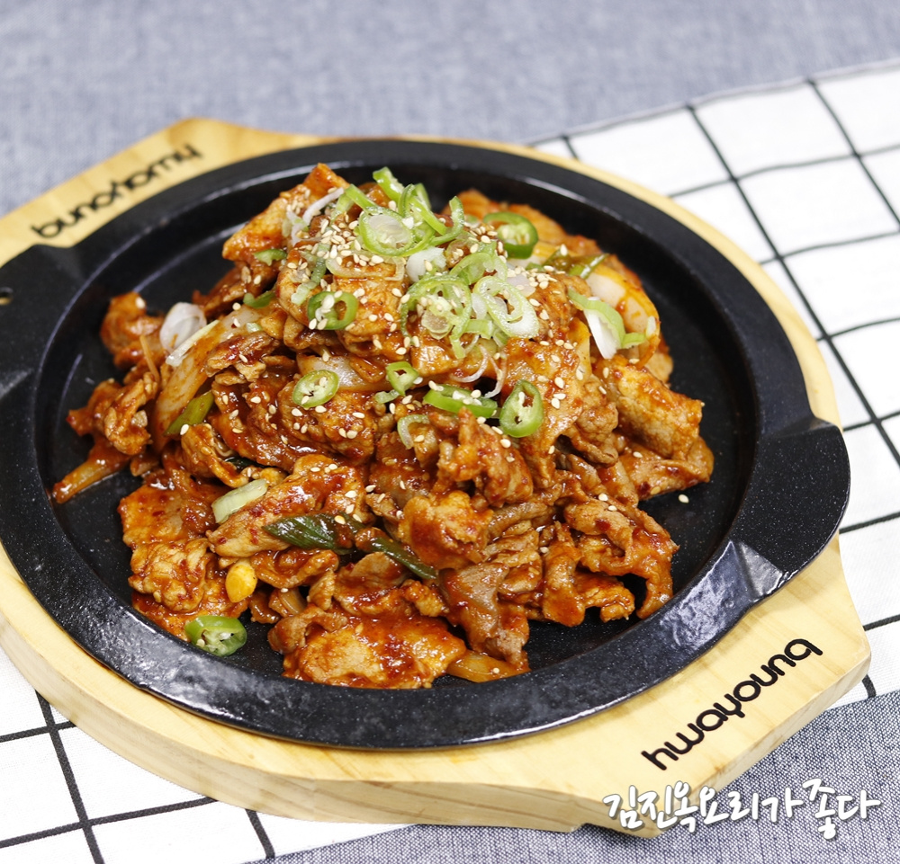

제육볶음
앞다리살 사용 고단백

정보
재료
- 앞다리살 500g
- 양파 반개
- 고추장
- 다진마늘
- 간장
- 설탕
만드는 순서
- 비닐에 앞다리살을 넣고, 고추장 1T, 간장 0.5T, 다진마늘 0.5T, 설탕 0.5T를 넣고 버무립니다.
- 냉장고에 15분 이상, 하루 미만으로 고기에 양념을 재웁니다.
- 팬에 기름을 두르고 약불로 예열합니다.
- 다진 양파를 약불에서 투명해질 때까지 볶습니다.
- 양파가 투명해지면 재워둔 고기를 넣어 중강불에서 수분이 날아갈 때까지 볶습니다.
더 알아보기: 만개의레시피
제육볶음